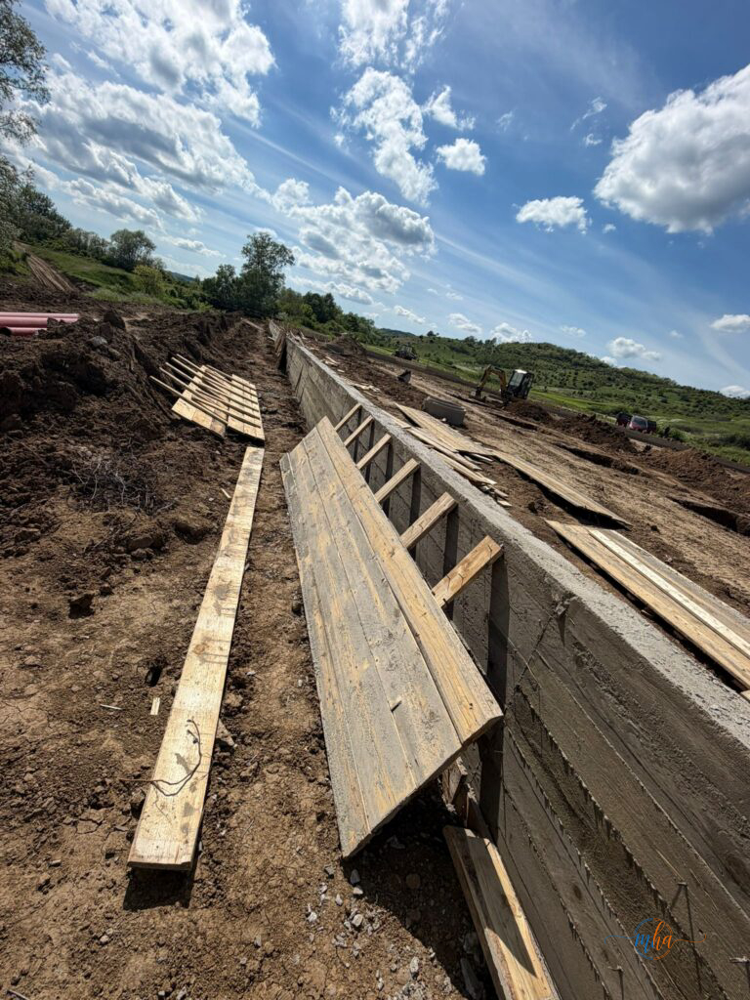
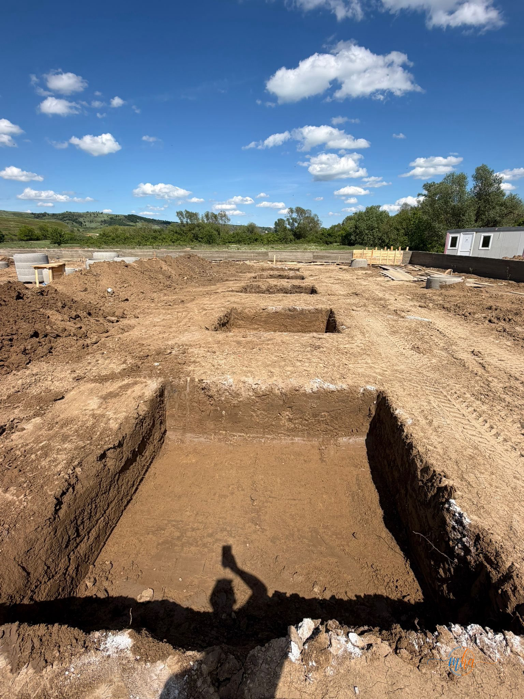
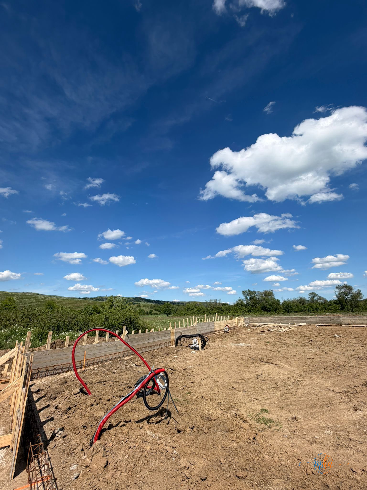

Un nou proiect important pentru județul Mehedinți a intrat în faza activă de implementare. Compania ZEBLEX SRL a demarat lucrările pentru realizarea unui Centru de Colectare a Deșeurilor prin Aport Voluntar în comuna Voloiac — investiție care vine să răspundă nevoii tot mai acute de modernizare a infrastructurii de mediu și de aliniere la standardele europene privind gestionarea responsabilă a deșeurilor.
Proiectul reprezintă o componentă esențială a strategiei de reducere a deșeurilor depozitate necontrolat și de creștere a ratei de reciclare la nivel local — obiective asumate de România față de Uniunea Europeană în cadrul planurilor naționale de gestionare a deșeurilor.
Ce lucrări se execută în prezent pe șantier
Etapa curentă vizează infrastructura de bază a amplasamentului — lucrările cele mai tehnice și esențiale pentru soliditatea întregului obiectiv. Echipele ZEBLEX execută în prezent:
🔧 Lucrări în execuție — etapa I


Lucrările avansează conform graficului stabilit, echipele de pe șantier coordonate de ZEBLEX asigurând un ritm susținut de execuție. Autoritățile locale au confirmat că implementarea etapelor tehnice decurge fără întârzieri, ceea ce contribuie la respectarea termenelor asumate prin contract.
Ce va include Centrul de Colectare la finalizare
Proiectul este conceput ca un obiectiv modern, complet echipat, care va deservi nu doar locuitorii comunei Voloiac, ci și comunitățile din zonă. La finalizare, centrul va dispune de:
🏭 Dotări prevăzute prin proiect

Instalarea rețelei de canalizare și pregătirea infrastructurii — șantier Voloiac, mai 2026
De ce contează acest proiect pentru Mehedinți
Centrele de Colectare prin Aport Voluntar sunt printre cele mai eficiente instrumente de reducere a deșeurilor aruncate ilegal și de creștere a cantităților reciclate la nivel local. Prin aceste centre, cetățenii pot preda gratuit deșeuri reciclabile — hârtie, plastic, sticlă, metal —, dar și deșeuri speciale precum cele electrice și electronice, voluminoase sau periculoase (vopsele, baterii, uleiuri uzate).
Investiția din Voloiac se înscrie în tendința generală de modernizare a infrastructurii de mediu din județul Mehedinți și vine să completeze rețeaua de colectare selectivă din zona rurală, acolo unde accesul la servicii de reciclare a fost istoric limitat.
„Construim mai mult decât clădiri! Construim încredere!" — ZEBLEX SRL, companie cu experiență dovedită în execuția lucrărilor de construcții civile și industriale din Mehedinți.
Etapele următoare ale proiectului
În perioada imediat următoare, echipele ZEBLEX vor finaliza lucrările de infrastructură — fundații, canalizare și împrejmuire —, după care va urma execuția platformei betonate și montarea structurii metalice. Ulterior, vor fi instalate echipamentele specifice: cântarul industrial, sistemul CCTV, iluminatul și containerul sanitar. Lucrările de amenajare peisagistică și împădurire vor încheia proiectul.